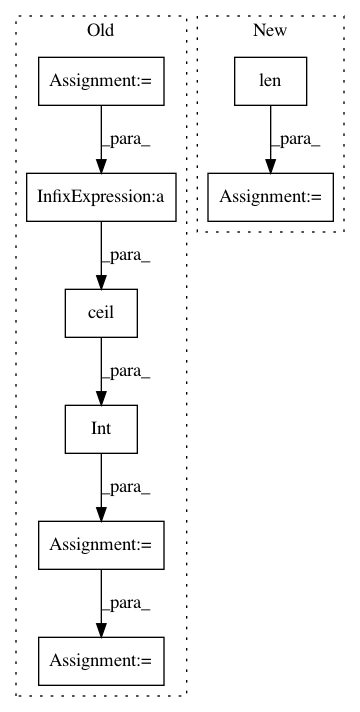

0261707a5204e4a2c5b93a230731e65c4fa9392c,spynnaker/pyNN/models/neuron/master_pop_table.py,MasterPopTableAsBinarySearch,get_master_population_table_size,#MasterPopTableAsBinarySearch#Any#,119
Before Change
// Get the number of atoms per core incoming
max_atoms = in_edge.pre_vertex.get_max_atoms_per_core()
if in_edge.pre_vertex.n_atoms < max_atoms:
max_atoms = in_edge.pre_vertex.n_atoms
// Get the number of likely vertices
n_edge_vertices = int(math.ceil(
float(in_edge.pre_vertex.n_atoms) / float(max_atoms)))
n_vertices += n_edge_vertices
n_entries += (
n_edge_vertices * len(in_edge.synapse_information))
// Multiply by 2 to get an upper bound
After Change
n_entries += len(in_edge.synapse_information)
else:
n_vertices += len(slices) * self.UPPER_BOUND_FUDGE
n_entries += (
len(in_edge.synapse_information) *
self.UPPER_BOUND_FUDGE)
// Multiply by each specific constant
return (
(n_vertices * _MASTER_POP_ENTRY_SIZE_BYTES) +
In pattern: SUPERPATTERN
Frequency: 3
Non-data size: 8
Instances
Project Name: SpiNNakerManchester/sPyNNaker
Commit Name: 0261707a5204e4a2c5b93a230731e65c4fa9392c
Time: 2020-09-30
Author: alan.barry.stokes@gmail.com
File Name: spynnaker/pyNN/models/neuron/master_pop_table.py
Class Name: MasterPopTableAsBinarySearch
Method Name: get_master_population_table_size
Project Name: SpiNNakerManchester/sPyNNaker
Commit Name: ef3b051ba0dc69a02f0d7aa8e955bea26b334f51
Time: 2020-09-30
Author: alan.barry.stokes@gmail.com
File Name: spynnaker/pyNN/utilities/bit_field_utilities.py
Class Name:
Method Name: get_estimated_sdram_for_bit_field_region
Project Name: ncullen93/torchsample
Commit Name: 70b15bde1d8a1b29d24f23bac1a28a63be0fb4d2
Time: 2017-04-20
Author: ncullen@modv-vlan533.0018.apn.wlan.med.upenn.edu
File Name: torchsample/modules/super_module.py
Class Name: SuperModule
Method Name: evaluate_loader